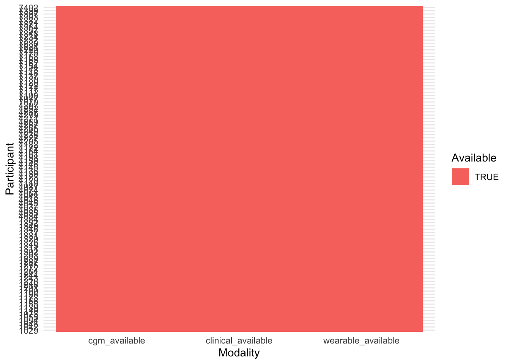
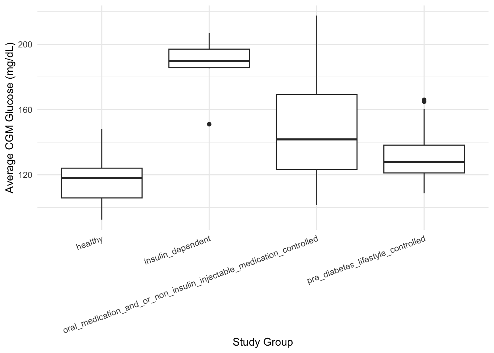
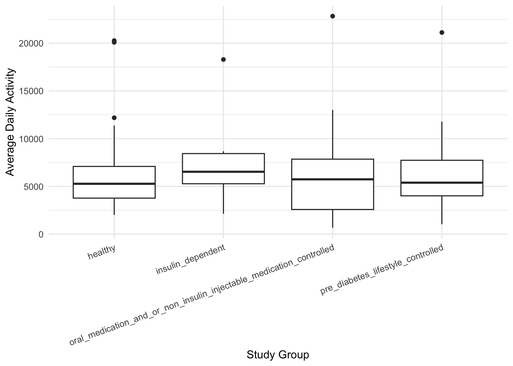

library(tidyverse)
library(knitr)
library(here)
options(dplyr.summarise.inform = FALSE)
theme_set(theme_minimal())Week 01: Cohort Assembly
Introduction
The goal of this notebook is to assemble the first analysis-ready AI-READI cohort. We combine participant-level information with modality manifests to determine which participants have continuous glucose monitoring (CGM), wearable, and clinical data available for analysis. We also perform quality-control checks on the joins, summarize participant characteristics, and identify analysis cohorts for future studies. This notebook was developed using the AI-READI mini dataset. If the full dataset becomes available, the same code should run after changing only the data path.
Data Path
The analysis was developed using the AI-READI v3 mini dataset. A single data_dir variable is used so that the notebook can be run on the full dataset later by changing only the data path.
data_dir <- here("data", "mini")
print(data_dir)[1] "/Users/sban/Downloads/AI-READI SUMMER 2026/UCLA-AI-READI-summer-internship-2026/data/mini"Load AI-READI Data
This section loads the participant table and modality manifest files required for cohort assembly. File paths are defined relative to the project directory. The first table loaded is participants.tsv, which provides participant-level information and will serve as the foundation for joining modality-specific data. The AI-READI v3 mini dataset uses person_id as the participant identifier. This variable will be used as the key for all subsequent data joins.
# Update the data path to the dataset root
data_dir <- here("data", "mini", "v3-mini")
print(data_dir)[1] "/Users/sban/Downloads/AI-READI SUMMER 2026/UCLA-AI-READI-summer-internship-2026/data/mini/v3-mini"# Show the top-level files
list.files(data_dir)[1] "ai_readi_master_cohort.csv" "cgm_all.rds"
[3] "dataset" "file-manifest.tsv" # Show what's inside the dataset folder
list.files(file.path(data_dir, "dataset")) [1] "cardiac_ecg" "CHANGELOG.md"
[3] "clinical_data" "dataset_description.json"
[5] "dataset_structure_description.json" "environment"
[7] "healthsheet.md" "LICENSE.txt"
[9] "participants.json" "participants.tsv"
[11] "README.md" "retinal_flio"
[13] "retinal_oct" "retinal_octa"
[15] "retinal_photography" "study_description.json"
[17] "wearable_activity_monitor" "wearable_blood_glucose" participants <- read_tsv(
file.path(data_dir, "dataset", "participants.tsv"),
show_col_types = FALSE
)
glimpse(participants)Rows: 100
Columns: 15
$ person_id <dbl> 1029, 1042, 1046, 1054, 1055, 1073, 1110, 11…
$ clinical_site <chr> "UW", "UW", "UW", "UW", "UW", "UW", "UW", "U…
$ study_group <chr> "pre_diabetes_lifestyle_controlled", "health…
$ age <dbl> 73, 40, 50, 71, 67, 40, 61, 76, 59, 68, 73, …
$ study_visit_date <date> 2023-09-07, 2023-10-11, 2023-10-17, 2023-10…
$ recommended_split <chr> "train", "train", "train", "train", "train",…
$ cardiac_ecg <lgl> TRUE, TRUE, TRUE, TRUE, TRUE, TRUE, TRUE, TR…
$ clinical_data <lgl> TRUE, TRUE, TRUE, TRUE, TRUE, TRUE, TRUE, TR…
$ environment <lgl> TRUE, TRUE, TRUE, TRUE, TRUE, TRUE, TRUE, TR…
$ retinal_flio <lgl> TRUE, TRUE, TRUE, TRUE, TRUE, TRUE, TRUE, TR…
$ retinal_oct <lgl> TRUE, TRUE, TRUE, TRUE, TRUE, TRUE, TRUE, TR…
$ retinal_octa <lgl> TRUE, TRUE, TRUE, TRUE, TRUE, TRUE, TRUE, TR…
$ retinal_photography <lgl> TRUE, TRUE, TRUE, TRUE, TRUE, TRUE, TRUE, TR…
$ wearable_activity_monitor <lgl> TRUE, TRUE, TRUE, TRUE, TRUE, TRUE, TRUE, TR…
$ wearable_blood_glucose <lgl> TRUE, TRUE, TRUE, TRUE, TRUE, TRUE, TRUE, TR…names(participants) [1] "person_id" "clinical_site"
[3] "study_group" "age"
[5] "study_visit_date" "recommended_split"
[7] "cardiac_ecg" "clinical_data"
[9] "environment" "retinal_flio"
[11] "retinal_oct" "retinal_octa"
[13] "retinal_photography" "wearable_activity_monitor"
[15] "wearable_blood_glucose" master_cohort <- read_csv(
file.path(data_dir, "ai_readi_master_cohort.csv"),
show_col_types = FALSE
)
glimpse(master_cohort)Rows: 100
Columns: 9
$ person_id <dbl> 1029, 1042, 1046, 1054, 1055, 1073, 1110, 1139, 1155, 1…
$ ekg_path <chr> "/mnt/boxdata/dataset/cardiac_ecg/ecg_12lead/philips_tc…
$ fundus_dir <chr> "/mnt/boxdata/dataset/retinal_photography/cfp/icare_eid…
$ oct_dir <chr> "/mnt/boxdata/dataset/retinal_oct/structural_oct/topcon…
$ octa_dir <lgl> NA, NA, NA, NA, NA, NA, NA, NA, NA, NA, NA, NA, NA, NA,…
$ flio_dir <chr> "/mnt/boxdata/dataset/retinal_flio/flio/heidelberg_flio…
$ Age_Scaled <dbl> 0, 0, 0, 0, 0, 0, 0, 0, 0, 0, 0, 0, 0, 0, 0, 0, 0, 0, 0…
$ BMI_Scaled <dbl> 0, 0, 0, 0, 0, 0, 0, 0, 0, 0, 0, 0, 0, 0, 0, 0, 0, 0, 0…
$ Glucose_Target <dbl> 100, 100, 100, 100, 100, 100, 100, 100, 100, 100, 100, …names(master_cohort)[1] "person_id" "ekg_path" "fundus_dir" "oct_dir"
[5] "octa_dir" "flio_dir" "Age_Scaled" "BMI_Scaled"
[9] "Glucose_Target"# Look inside the CGM folder
list.files(
file.path(data_dir,
"dataset",
"wearable_blood_glucose")
)[1] "continuous_glucose_monitoring" "manifest.tsv" list.files(
file.path(data_dir,
"dataset",
"wearable_blood_glucose"),
recursive = TRUE
) [1] "continuous_glucose_monitoring/dexcom_g6/1029/1029_DEX.json"
[2] "continuous_glucose_monitoring/dexcom_g6/1042/1042_DEX.json"
[3] "continuous_glucose_monitoring/dexcom_g6/1046/1046_DEX.json"
[4] "continuous_glucose_monitoring/dexcom_g6/1054/1054_DEX.json"
[5] "continuous_glucose_monitoring/dexcom_g6/1055/1055_DEX.json"
[6] "continuous_glucose_monitoring/dexcom_g6/1073/1073_DEX.json"
[7] "continuous_glucose_monitoring/dexcom_g6/1110/1110_DEX.json"
[8] "continuous_glucose_monitoring/dexcom_g6/1139/1139_DEX.json"
[9] "continuous_glucose_monitoring/dexcom_g6/1155/1155_DEX.json"
[10] "continuous_glucose_monitoring/dexcom_g6/1168/1168_DEX.json"
[11] "continuous_glucose_monitoring/dexcom_g6/1173/1173_DEX.json"
[12] "continuous_glucose_monitoring/dexcom_g6/1196/1196_DEX.json"
[13] "continuous_glucose_monitoring/dexcom_g6/1199/1199_DEX.json"
[14] "continuous_glucose_monitoring/dexcom_g6/1201/1201_DEX.json"
[15] "continuous_glucose_monitoring/dexcom_g6/1216/1216_DEX.json"
[16] "continuous_glucose_monitoring/dexcom_g6/1226/1226_DEX.json"
[17] "continuous_glucose_monitoring/dexcom_g6/1243/1243_DEX.json"
[18] "continuous_glucose_monitoring/dexcom_g6/1244/1244_DEX.json"
[19] "continuous_glucose_monitoring/dexcom_g6/1264/1264_DEX.json"
[20] "continuous_glucose_monitoring/dexcom_g6/1272/1272_DEX.json"
[21] "continuous_glucose_monitoring/dexcom_g6/1275/1275_DEX.json"
[22] "continuous_glucose_monitoring/dexcom_g6/1287/1287_DEX.json"
[23] "continuous_glucose_monitoring/dexcom_g6/1289/1289_DEX.json"
[24] "continuous_glucose_monitoring/dexcom_g6/1293/1293_DEX.json"
[25] "continuous_glucose_monitoring/dexcom_g6/1302/1302_DEX.json"
[26] "continuous_glucose_monitoring/dexcom_g6/1311/1311_DEX.json"
[27] "continuous_glucose_monitoring/dexcom_g6/1315/1315_DEX.json"
[28] "continuous_glucose_monitoring/dexcom_g6/1326/1326_DEX.json"
[29] "continuous_glucose_monitoring/dexcom_g6/1329/1329_DEX.json"
[30] "continuous_glucose_monitoring/dexcom_g6/1331/1331_DEX.json"
[31] "continuous_glucose_monitoring/dexcom_g6/1337/1337_DEX.json"
[32] "continuous_glucose_monitoring/dexcom_g6/1346/1346_DEX.json"
[33] "continuous_glucose_monitoring/dexcom_g6/1349/1349_DEX.json"
[34] "continuous_glucose_monitoring/dexcom_g6/1352/1352_DEX.json"
[35] "continuous_glucose_monitoring/dexcom_g6/1384/1384_DEX.json"
[36] "continuous_glucose_monitoring/dexcom_g6/4034/4034_DEX.json"
[37] "continuous_glucose_monitoring/dexcom_g6/4035/4035_DEX.json"
[38] "continuous_glucose_monitoring/dexcom_g6/4036/4036_DEX.json"
[39] "continuous_glucose_monitoring/dexcom_g6/4037/4037_DEX.json"
[40] "continuous_glucose_monitoring/dexcom_g6/4045/4045_DEX.json"
[41] "continuous_glucose_monitoring/dexcom_g6/4046/4046_DEX.json"
[42] "continuous_glucose_monitoring/dexcom_g6/4048/4048_DEX.json"
[43] "continuous_glucose_monitoring/dexcom_g6/4064/4064_DEX.json"
[44] "continuous_glucose_monitoring/dexcom_g6/4074/4074_DEX.json"
[45] "continuous_glucose_monitoring/dexcom_g6/4087/4087_DEX.json"
[46] "continuous_glucose_monitoring/dexcom_g6/4110/4110_DEX.json"
[47] "continuous_glucose_monitoring/dexcom_g6/4120/4120_DEX.json"
[48] "continuous_glucose_monitoring/dexcom_g6/4123/4123_DEX.json"
[49] "continuous_glucose_monitoring/dexcom_g6/4130/4130_DEX.json"
[50] "continuous_glucose_monitoring/dexcom_g6/4136/4136_DEX.json"
[51] "continuous_glucose_monitoring/dexcom_g6/4145/4145_DEX.json"
[52] "continuous_glucose_monitoring/dexcom_g6/4148/4148_DEX.json"
[53] "continuous_glucose_monitoring/dexcom_g6/4150/4150_DEX.json"
[54] "continuous_glucose_monitoring/dexcom_g6/4158/4158_DEX.json"
[55] "continuous_glucose_monitoring/dexcom_g6/4161/4161_DEX.json"
[56] "continuous_glucose_monitoring/dexcom_g6/4164/4164_DEX.json"
[57] "continuous_glucose_monitoring/dexcom_g6/4172/4172_DEX.json"
[58] "continuous_glucose_monitoring/dexcom_g6/4182/4182_DEX.json"
[59] "continuous_glucose_monitoring/dexcom_g6/4205/4205_DEX.json"
[60] "continuous_glucose_monitoring/dexcom_g6/4227/4227_DEX.json"
[61] "continuous_glucose_monitoring/dexcom_g6/4235/4235_DEX.json"
[62] "continuous_glucose_monitoring/dexcom_g6/4249/4249_DEX.json"
[63] "continuous_glucose_monitoring/dexcom_g6/4265/4265_DEX.json"
[64] "continuous_glucose_monitoring/dexcom_g6/4267/4267_DEX.json"
[65] "continuous_glucose_monitoring/dexcom_g6/4269/4269_DEX.json"
[66] "continuous_glucose_monitoring/dexcom_g6/4271/4271_DEX.json"
[67] "continuous_glucose_monitoring/dexcom_g6/4279/4279_DEX.json"
[68] "continuous_glucose_monitoring/dexcom_g6/4287/4287_DEX.json"
[69] "continuous_glucose_monitoring/dexcom_g6/4292/4292_DEX.json"
[70] "continuous_glucose_monitoring/dexcom_g6/4297/4297_DEX.json"
[71] "continuous_glucose_monitoring/dexcom_g6/7070/7070_DEX.json"
[72] "continuous_glucose_monitoring/dexcom_g6/7077/7077_DEX.json"
[73] "continuous_glucose_monitoring/dexcom_g6/7100/7100_DEX.json"
[74] "continuous_glucose_monitoring/dexcom_g6/7112/7112_DEX.json"
[75] "continuous_glucose_monitoring/dexcom_g6/7117/7117_DEX.json"
[76] "continuous_glucose_monitoring/dexcom_g6/7122/7122_DEX.json"
[77] "continuous_glucose_monitoring/dexcom_g6/7129/7129_DEX.json"
[78] "continuous_glucose_monitoring/dexcom_g6/7130/7130_DEX.json"
[79] "continuous_glucose_monitoring/dexcom_g6/7137/7137_DEX.json"
[80] "continuous_glucose_monitoring/dexcom_g6/7146/7146_DEX.json"
[81] "continuous_glucose_monitoring/dexcom_g6/7148/7148_DEX.json"
[82] "continuous_glucose_monitoring/dexcom_g6/7154/7154_DEX.json"
[83] "continuous_glucose_monitoring/dexcom_g6/7162/7162_DEX.json"
[84] "continuous_glucose_monitoring/dexcom_g6/7165/7165_DEX.json"
[85] "continuous_glucose_monitoring/dexcom_g6/7168/7168_DEX.json"
[86] "continuous_glucose_monitoring/dexcom_g6/7170/7170_DEX.json"
[87] "continuous_glucose_monitoring/dexcom_g6/7220/7220_DEX.json"
[88] "continuous_glucose_monitoring/dexcom_g6/7224/7224_DEX.json"
[89] "continuous_glucose_monitoring/dexcom_g6/7230/7230_DEX.json"
[90] "continuous_glucose_monitoring/dexcom_g6/7232/7232_DEX.json"
[91] "continuous_glucose_monitoring/dexcom_g6/7234/7234_DEX.json"
[92] "continuous_glucose_monitoring/dexcom_g6/7348/7348_DEX.json"
[93] "continuous_glucose_monitoring/dexcom_g6/7357/7357_DEX.json"
[94] "continuous_glucose_monitoring/dexcom_g6/7364/7364_DEX.json"
[95] "continuous_glucose_monitoring/dexcom_g6/7371/7371_DEX.json"
[96] "continuous_glucose_monitoring/dexcom_g6/7382/7382_DEX.json"
[97] "continuous_glucose_monitoring/dexcom_g6/7393/7393_DEX.json"
[98] "continuous_glucose_monitoring/dexcom_g6/7397/7397_DEX.json"
[99] "continuous_glucose_monitoring/dexcom_g6/7399/7399_DEX.json"
[100] "continuous_glucose_monitoring/dexcom_g6/7402/7402_DEX.json"
[101] "manifest.tsv" # Read the CGM manifest
cgm_manifest <- read_tsv(
file.path(
data_dir,
"dataset",
"wearable_blood_glucose",
"manifest.tsv"
),
show_col_types = FALSE
)
glimpse(cgm_manifest)Rows: 100
Columns: 8
$ person_id <dbl> 1029, 1042, 1046, 1054, 1055, 10…
$ glucose_filepath <chr> "/wearable_blood_glucose/continu…
$ glucose_level_record_count <dbl> 2856, 2845, 2856, 2835, 2843, 28…
$ average_glucose_level_mg_dl <dbl> 110.7066, 113.6858, 121.2496, 12…
$ glucose_sensor_sampling_duration_days <dbl> 11, 11, 11, 11, 11, 11, 11, 10, …
$ glucose_sensor_id <chr> "PG15103578", "PG15103578", "PG1…
$ manufacturer <chr> "Dexcom", "Dexcom", "Dexcom", "D…
$ manufacturer_model_name <chr> "G6", "G6", "G6", "G6", "G6", "G…names(cgm_manifest)[1] "person_id"
[2] "glucose_filepath"
[3] "glucose_level_record_count"
[4] "average_glucose_level_mg_dl"
[5] "glucose_sensor_sampling_duration_days"
[6] "glucose_sensor_id"
[7] "manufacturer"
[8] "manufacturer_model_name" head(cgm_manifest)# A tibble: 6 × 8
person_id glucose_filepath glucose_level_record…¹ average_glucose_leve…²
<dbl> <chr> <dbl> <dbl>
1 1029 /wearable_blood_gluco… 2856 111.
2 1042 /wearable_blood_gluco… 2845 114.
3 1046 /wearable_blood_gluco… 2856 121.
4 1054 /wearable_blood_gluco… 2835 130.
5 1055 /wearable_blood_gluco… 2843 118.
6 1073 /wearable_blood_gluco… 2856 199.
# ℹ abbreviated names: ¹glucose_level_record_count,
# ²average_glucose_level_mg_dl
# ℹ 4 more variables: glucose_sensor_sampling_duration_days <dbl>,
# glucose_sensor_id <chr>, manufacturer <chr>, manufacturer_model_name <chr>Build Cohort Table
# Explore the participant table
# Number of participants
nrow(participants)[1] 100# Number of unique participants
n_distinct(participants$person_id)[1] 100# Summary of age
summary(participants$age) Min. 1st Qu. Median Mean 3rd Qu. Max.
40.00 50.00 63.00 62.06 71.50 86.00 # Participant counts by study group
count(participants, study_group)# A tibble: 4 × 2
study_group n
<chr> <int>
1 healthy 31
2 insulin_dependent 6
3 oral_medication_and_or_non_insulin_injectable_medication_controlled 33
4 pre_diabetes_lifestyle_controlled 30# Participant counts by clinical site
count(participants, clinical_site)# A tibble: 3 × 2
clinical_site n
<chr> <int>
1 UAB 30
2 UCSD 35
3 UW 35# Participant counts by recommended split
count(participants, recommended_split)# A tibble: 1 × 2
recommended_split n
<chr> <int>
1 train 100# Create the initial cohort table
cohort <- participants %>%
select(
person_id,
age,
study_group,
clinical_site,
recommended_split,
wearable_blood_glucose,
wearable_activity_monitor,
clinical_data
) %>%
rename(
cgm_available = wearable_blood_glucose,
wearable_available = wearable_activity_monitor,
clinical_available = clinical_data
)
# Inspect the cohort table
glimpse(cohort)Rows: 100
Columns: 8
$ person_id <dbl> 1029, 1042, 1046, 1054, 1055, 1073, 1110, 1139, 115…
$ age <dbl> 73, 40, 50, 71, 67, 40, 61, 76, 59, 68, 73, 48, 42,…
$ study_group <chr> "pre_diabetes_lifestyle_controlled", "healthy", "pr…
$ clinical_site <chr> "UW", "UW", "UW", "UW", "UW", "UW", "UW", "UW", "UW…
$ recommended_split <chr> "train", "train", "train", "train", "train", "train…
$ cgm_available <lgl> TRUE, TRUE, TRUE, TRUE, TRUE, TRUE, TRUE, TRUE, TRU…
$ wearable_available <lgl> TRUE, TRUE, TRUE, TRUE, TRUE, TRUE, TRUE, TRUE, TRU…
$ clinical_available <lgl> TRUE, TRUE, TRUE, TRUE, TRUE, TRUE, TRUE, TRUE, TRU…head(cohort)# A tibble: 6 × 8
person_id age study_group clinical_site recommended_split cgm_available
<dbl> <dbl> <chr> <chr> <chr> <lgl>
1 1029 73 pre_diabetes_li… UW train TRUE
2 1042 40 healthy UW train TRUE
3 1046 50 pre_diabetes_li… UW train TRUE
4 1054 71 healthy UW train TRUE
5 1055 67 healthy UW train TRUE
6 1073 40 insulin_depende… UW train TRUE
# ℹ 2 more variables: wearable_available <lgl>, clinical_available <lgl># Add participant-level CGM summary
# Record cohort size before CGM join
rows_before_cgm_join <- nrow(cohort)
ids_before_cgm_join <- n_distinct(cohort$person_id)
# Join CGM manifest information
cohort <- cohort %>%
left_join(
cgm_manifest %>%
select(
person_id,
average_glucose_level_mg_dl
),
by = "person_id"
)
# Record cohort size after CGM join
rows_after_cgm_join <- nrow(cohort)
ids_after_cgm_join <- n_distinct(cohort$person_id)
# Display join quality-control summary
tibble(
Measure = c(
"Rows before CGM join",
"Rows after CGM join",
"Unique participants before CGM join",
"Unique participants after CGM join"
),
Count = c(
rows_before_cgm_join,
rows_after_cgm_join,
ids_before_cgm_join,
ids_after_cgm_join
)
) %>%
kable()| Measure | Count |
|---|---|
| Rows before CGM join | 100 |
| Rows after CGM join | 100 |
| Unique participants before CGM join | 100 |
| Unique participants after CGM join | 100 |
glimpse(cohort)Rows: 100
Columns: 9
$ person_id <dbl> 1029, 1042, 1046, 1054, 1055, 1073, 1110, …
$ age <dbl> 73, 40, 50, 71, 67, 40, 61, 76, 59, 68, 73…
$ study_group <chr> "pre_diabetes_lifestyle_controlled", "heal…
$ clinical_site <chr> "UW", "UW", "UW", "UW", "UW", "UW", "UW", …
$ recommended_split <chr> "train", "train", "train", "train", "train…
$ cgm_available <lgl> TRUE, TRUE, TRUE, TRUE, TRUE, TRUE, TRUE, …
$ wearable_available <lgl> TRUE, TRUE, TRUE, TRUE, TRUE, TRUE, TRUE, …
$ clinical_available <lgl> TRUE, TRUE, TRUE, TRUE, TRUE, TRUE, TRUE, …
$ average_glucose_level_mg_dl <dbl> 110.7066, 113.6858, 121.2496, 129.7365, 11…The AI-READI v3 mini dataset contains 100 unique participants with no duplicated person_id values. Participants range in age from 40 to 86 years, with a median age of 63 years and are distributed across four study groups and three clinical sites. All participants belong to the training split, making the mini dataset appropriate for developing and testing analysis code before applying it to the full dataset.
Quality Control
# Baseline quality-control checks
# Number of rows
nrow(cohort)[1] 100# Number of unique participants
n_distinct(cohort$person_id)[1] 100# Check for duplicated participant IDs
sum(duplicated(cohort$person_id))[1] 0# Count missing values in each variable
colSums(is.na(cohort)) person_id age
0 0
study_group clinical_site
0 0
recommended_split cgm_available
0 0
wearable_available clinical_available
0 0
average_glucose_level_mg_dl
0 # Check that everyone still exists after the join
rows_before_cgm_join <- nrow(cohort)
rows_after_cgm_join <- nrow(cohort)
tibble(
step = c("Before CGM join", "After CGM join"),
rows = c(rows_before_cgm_join, rows_after_cgm_join)
)# A tibble: 2 × 2
step rows
<chr> <int>
1 Before CGM join 100
2 After CGM join 100n_distinct(cohort$person_id)[1] 100sum(is.na(cohort$average_glucose_level_mg_dl))[1] 0The initial cohort table contains 100 rows and 100 unique participants, indicating that each participant appears only once. No duplicated person_id values were detected. Missing-value counts provide a baseline assessment of data completeness before additional datasets are joined. The cohort table remained at 100 rows and 100 unique participants after joining the CGM manifest using person_id. No participants were lost during the join, and every participant had an average CGM glucose value available in the mini dataset.
Table 1: Participants by Study Group
table1 <- cohort %>%
count(study_group, name = "participants")
kable(table1)| study_group | participants |
|---|---|
| healthy | 31 |
| insulin_dependent | 6 |
| oral_medication_and_or_non_insulin_injectable_medication_controlled | 33 |
| pre_diabetes_lifestyle_controlled | 30 |
The mini dataset contains four study groups. The largest group is the oral medication/non-insulin injectable medication controlled group (33 participants), followed by the healthy (31 participants) and pre-diabetes lifestyle controlled (30 participants) groups. The insulin-dependent group is the smallest with 6 participants.
Table 2: Participants by Study Group and Clinical Site
table2 <- cohort %>%
count(study_group, clinical_site)
kable(table2)| study_group | clinical_site | n |
|---|---|---|
| healthy | UAB | 9 |
| healthy | UCSD | 8 |
| healthy | UW | 14 |
| insulin_dependent | UAB | 1 |
| insulin_dependent | UCSD | 2 |
| insulin_dependent | UW | 3 |
| oral_medication_and_or_non_insulin_injectable_medication_controlled | UAB | 12 |
| oral_medication_and_or_non_insulin_injectable_medication_controlled | UCSD | 11 |
| oral_medication_and_or_non_insulin_injectable_medication_controlled | UW | 10 |
| pre_diabetes_lifestyle_controlled | UAB | 8 |
| pre_diabetes_lifestyle_controlled | UCSD | 14 |
| pre_diabetes_lifestyle_controlled | UW | 8 |
Participants were distributed across all three clinical sites, with UCSD and UW contributing the largest numbers of participants. Each study group was represented at each site, suggesting that the mini dataset captures variation across both disease groups and recruitment locations. The insulin-dependent group had fewer participants across all sites, which should be considered when interpreting subgroup comparisons.
Table 3: Data Availability Summary
table3 <- tibble(
Dataset = c(
"CGM",
"Wearable",
"Clinical",
"CGM + Wearable",
"CGM + Wearable + Clinical"
),
Participants = c(
sum(cohort$cgm_available),
sum(cohort$wearable_available),
sum(cohort$clinical_available),
sum(cohort$cgm_available &
cohort$wearable_available),
sum(cohort$cgm_available &
cohort$wearable_available &
cohort$clinical_available)
)
)
kable(table3)| Dataset | Participants |
|---|---|
| CGM | 100 |
| Wearable | 100 |
| Clinical | 100 |
| CGM + Wearable | 100 |
| CGM + Wearable + Clinical | 100 |
All 100 participants have CGM, wearable, and clinical data available. Therefore, every participant qualifies for analyses requiring all three modalities in the mini dataset.
Figure 1: Modality Availability Heatmap
heatmap_data <- cohort %>%
select(
person_id,
cgm_available,
wearable_available,
clinical_available
) %>%
pivot_longer(
-person_id,
names_to = "modality",
values_to = "available"
)
ggplot(
heatmap_data,
aes(x = modality,
y = factor(person_id),
fill = available)
) +
geom_tile() +
labs(
x = "Modality",
y = "Participant",
fill = "Available"
)
Figure 2: Average CGM Glucose by Study Group
ggplot(
cohort,
aes(
x = study_group,
y = average_glucose_level_mg_dl
)
) +
geom_boxplot() +
labs(
x = "Study Group",
y = "Average CGM Glucose (mg/dL)"
) +
theme(axis.text.x = element_text(angle = 20, hjust = 1))
Figure 3: Average Daily Activity by Study Group
# Read wearable manifest
wearable_manifest <- read_tsv(
file.path(
data_dir,
"dataset",
"wearable_activity_monitor",
"manifest.tsv"
),
show_col_types = FALSE
)
# Add average daily activity to cohort table
cohort <- cohort %>%
left_join(
wearable_manifest %>%
select(
person_id,
average_daily_activity
),
by = "person_id"
)
# Plot average daily activity by study group
ggplot(
cohort,
aes(
x = study_group,
y = average_daily_activity
)
) +
geom_boxplot() +
labs(
x = "Study Group",
y = "Average Daily Activity"
) +
theme(
axis.text.x = element_text(angle = 20, hjust = 1)
)
The wearable activity manifest was available for all 100 participants in the AI-READI v3 mini dataset. Average daily activity differed across participants within each study group, suggesting variability in physical activity patterns that may be relevant for future analyses combining wearable behavior with CGM measurements. This wearable-derived activity measure provides a foundation for examining relationships between physical activity, sleep, and glucose regulation.
Analysis Cohorts
Two analysis cohorts were defined based on available data modalities.
CGM-only cohort
The CGM-only cohort includes all participants with available continuous glucose monitoring (CGM) data. In the AI-READI v3 mini dataset, this cohort contains 100 participants across all four study groups: healthy, pre-diabetes lifestyle controlled, oral medication and/or non-insulin injectable medication controlled, and insulin-dependent groups.
This cohort can be used to investigate glucose patterns, glycemic variability, average glucose levels, time in range, and other CGM-derived measures. However, the CGM-only cohort cannot evaluate relationships between glucose patterns and additional physiological measurements, such as wearable-derived sleep and physical activity patterns or clinical biomarkers.
CGM + wearable + clinical cohort
The integrated CGM + wearable + clinical cohort includes participants with available continuous glucose monitoring data, wearable activity data, and clinical measurements. In the AI-READI v3 mini dataset, all 100 participants meet these criteria.
This cohort supports multimodal analyses examining relationships between glucose patterns, sleep, physical activity, and clinical phenotypes such as HbA1c, BMI, and laboratory measurements. Because all participants in the mini dataset have complete availability across these modalities, the CGM-only cohort and the integrated cohort contain the same participants.
These cohort definitions establish which scientific questions can be addressed using CGM data alone and which questions require integration of multiple physiological data sources.
Mini vs. Full Dataset
This notebook was developed using the AI-READI v3 mini dataset to enable rapid development and debugging. The analysis was written using relative file paths and the here() package so that the same code can be applied to the full dataset by changing only the data directory. Running the notebook on the full dataset will increase the sample size while preserving the analysis workflow.
Interpretation
The AI-READI v3 mini dataset contains a balanced cohort across three clinical sites and four study groups. All participants have CGM, wearable, and clinical data, making the dataset well suited for developing reproducible workflows before scaling to the full AI-READI dataset. The successful joins demonstrate that person_id serves as a reliable identifier for integrating participant-level information across modalities.
Conclusions
An analysis-ready participant cohort was successfully assembled from the AI-READI v3 mini dataset. Participant characteristics, modality availability, and quality-control checks confirmed that the data can be integrated without participant loss. This cohort provides the foundation for subsequent analyses of continuous glucose monitoring, sleep, physical activity, and clinical phenotypes in the following weeks of the internship.